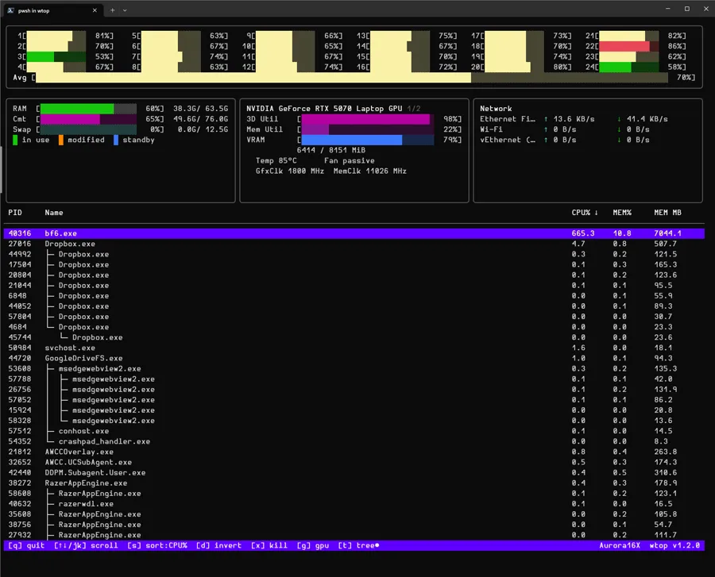
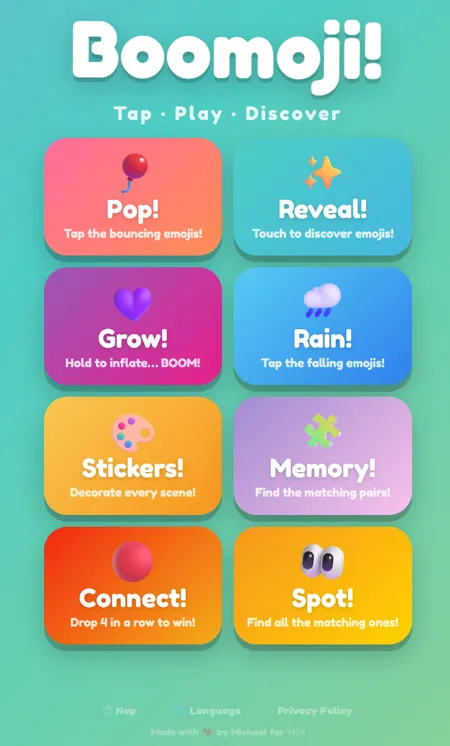

wtop
Go
Terminal
A self-contained, single-binary terminal system monitor for Windows, inspired by htop — real-time CPU, memory, GPU, and process metrics.

A self-contained, single-binary terminal system monitor for Windows, inspired by htop — real-time CPU, memory, GPU, and process metrics.
A Windows system tray app that consolidates GitHub, Bitbucket Cloud, and GitLab.com activity into a unified inbox with native Windows toast alerts.

A mobile-first progressive web app emoji game for toddlers — tap, pop, and discover across eight game modes.
A custom tracking dashboard and scraper for monitoring Canadian Intelcom Express package delivery status.
An interactive PowerShell CLI tool that provides quick profile switching for AWS SSO accounts with arrow-key navigation.
A terminal and web Markdown reader and renderer, delivering fast and beautiful document styling.
A lightweight user script and extension designed to clean up LinkedIn profiles by removing the 'Verify with CLEAR' buttons.
A popular Node.js library wrapper around the VirtualBox VBoxManage CLI tool to manage and control virtual machines.
A Python tool that converts EPUB eBooks into high-quality audiobooks using Microsoft Edge's neural text-to-speech engine.
Connect & Network